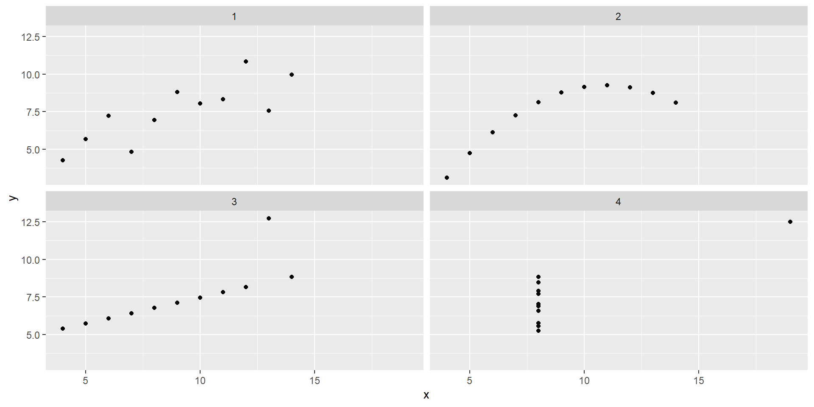
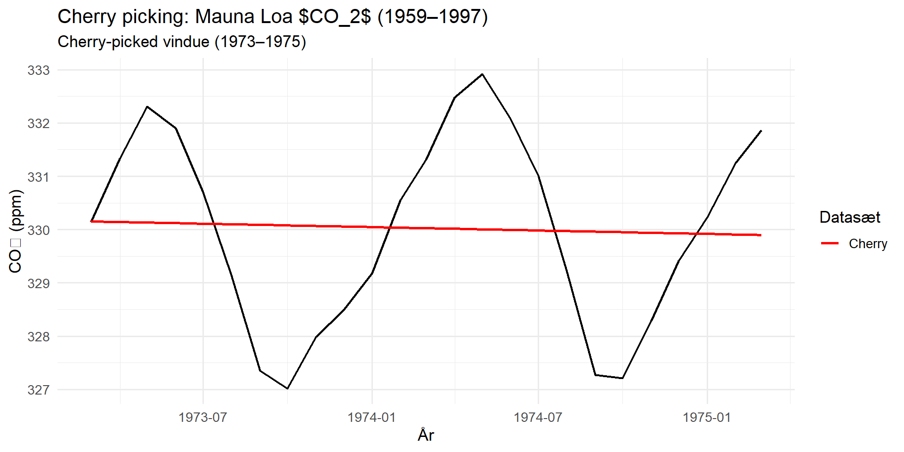

Hyppige fejl
Ja, det er fejl I kommer til at begå. For de bliver begået så ofte, at de har fået navne.
Pas på summary statistics
Summary statistics kan snyde og missse store forskelle i data. Betragt disse data:
# A tibble: 8 × 5
variabel middel median stdafv iqr
<chr> <dbl> <dbl> <dbl> <dbl>
1 x1 9 9 3.32 5
2 x2 9 9 3.32 5
3 x3 9 9 3.32 5
4 x4 9 8 3.32 0
5 y1 7.50 7.58 2.03 2.26
6 y2 7.50 8.14 2.03 2.25
7 y3 7.5 7.11 2.03 1.73
8 y4 7.50 7.04 2.03 2.02
De ser ret ens ud.
Correlationen ser også fin ud
Korrelationen mellem parrene er også ret ens: der er noget med x4 og y4. Men ellers - ret ens.
y1 y2 y3 y4
x1 0.8164205 0.8162365 0.8162867 -0.3140467
x2 0.8164205 0.8162365 0.8162867 -0.3140467
x3 0.8164205 0.8162365 0.8162867 -0.3140467
x4 -0.5290927 -0.7184365 -0.3446610 0.8165214
Men er de nu også det?
Ikke hvis vi plotter dem:
Det er ikke nok at se på summary statistics. Husk at plotte!
Kirsebærplukning
Eller på engelsk “Cherry picking”
Når vi kun udvælger de data der passer med det vi gerne vil vise…

p-fishing
https://xkcd.com/882/
vores p-værdi på 5% - det fortæller os at der er 5% risiko for.
Matematikken er ikke helt sådan, men intuitivt. Hvis vi tester for 20 forskellige ting, så vil en af dem - helt tilfældigt - have en p-værdi vi kan lide.
Sampling bias
Når vi konkluderer ud fra et datasæt, der ikke er repræsentativt for den population vi ønsker at undersøge.
Valgprognoser der udelukkende baserer sig på journalister, vil systematisk forudsige flertal til rød blok. https://sketchplanations.com/correlation-is-not-causation
Præference forfalskning
Det fænomen at folk svarer det de tror eller mener er det ønskede.
“Hvor mange genstande drikker du om ugen?”
Hvor ærligt svarer folk?
Hvis vi et øjeblik glemmer at de tilstedeværende nok ikke er specielt repræsentative for hele befolkningen (sampling bias).
Hvem af jer er det?
Overlevelsesbias
Når vi drager konklusioner på basis af et ukomplet datasæt, der består af de data der har overlevet et eller andet udvælgelseskriterium. Dette er klassikeren.
Jagerfly under 2. verdenskrig der overlevede turen over Tyskland havde skudhuller. Her er en visualisering af de skudhuller man observerede (for flere fly) https://en.wikipedia.org/wiki/Survivorship_bias#/media/File:Survivorship-bias.svg
Hvilke dele af flyet skal vi tilfører mere armering?
De dele hvor der ikke er skudhuller i de fly der vender tilbage. For det kunne de jo overleve. De fly der ikke når tilbage - de er formentlig blevet ramt andre steder.
Overfitting
Når vi skaber en model der er skræddersyet de data vi har - og ikke er repræsentativ for en generel tendens.
Publicerings bias
Du har to resultater fra din undersøgelse.
Interessante resultater har større chance for at blive publiceret. Vi hører ikke om de negative resultater (altså dem hvor der ikke er en sammenhæng)
Korrelation er ikke kausalitet
spurious correlations
https://www.tylervigen.com/spurious/correlation/5920_per-capita-consumption-of-margarine_correlates-with_the-divorce-rate-in-maine
Kausalitet betyder at en hændelse er det den direkte konsekvens af en anden. Når jeg trykker på kontakten, tænder lyset. Lyset tænder som en direkte konsekvens af at jeg har trykket på kontakten.
Korrelation betyder at to hændelser (eller variable) bevæger sig sammen. Når x stiger, stiger y også. Eller, en negativ korrelation. Når x stiger, falder y.
Der kan være en sammenhæng. Når salget af solcreme stiger, stiger salget af ispinde også. Ikke fordi man får behov for solcreme når man spiser is. Men fordi solskin og godt vejr om sommeren fører til stigende behov for solcreme. Og fordi varmt vejr fører til større efterspørgsel efter ispinde.
Hvordan tester vi for om x og y har en kausal sammenhæng?
Vi designer vores eksperimenter så vi kan afgøre det. Random sampling, dobbelt blindede forsøg, tilpas store sample størrelser.
Og så kan vi infer en sammenhæng. Men næppe bevise den. https://sketchplanations.com/correlation-is-not-causation